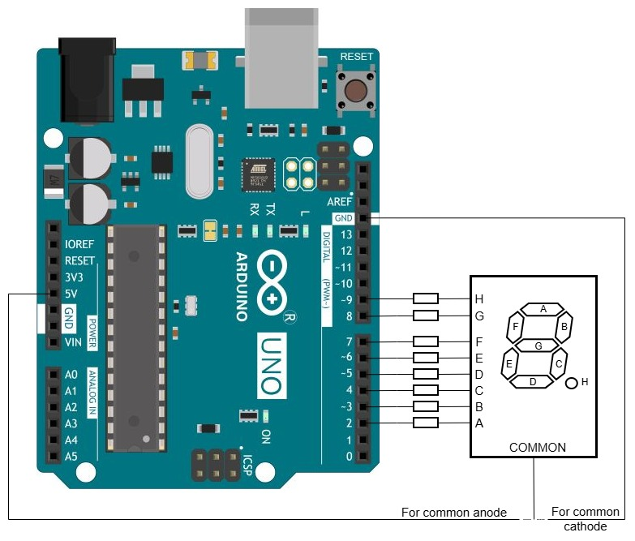

Семисегментные индикаторы с общим катодом и общим анодом подключаются и управляются с точностью до наоборот. Это наоборот при переходе от одного типа индикатора к другому требует изменений аппаратной части, особенно существенных, если индикатор подключён к Arduino не напрямую, а через ключи. В то же время в программе, заранее подготовленной к такому переходу, достаточно изменить значение одной константы. Здесь представлена такая программа.
Когда у индикатора общий катод, его подключают к GND, а на аноды подают через резисторы положительный потенциал. Если же у индикатора общий анод, то ситуация обратная: анод подключают к положительному потенциалу (+5 В), а сегменты через резисторы к GND. От Arduino требуется выдать на сегменты нужный потенциал. Например, чтобы зажечь цифру 7 на индикаторе с общим катодом, надо выдать высокий потенциал на сегменты A, B и C и низкий потенциал на остальные сегменты. Чтобы зажечь ту же цифру на индикаторе с общим анодом, надо выдать низкий потенциал на указанные три сегмента и высокий на остальные. Иными словами, байт, которым указываются горящие сегменты (схема отображения), в случае общего анода следует выдавать в порты инвертированным.
Программа представляет собой развитие предыдущего проекта "Зажигаем цифры и знаки". В ней так же реализованы разбор командной строки и преобразование строки единиц и нулей в байт (в схему отображения произвольного знака). По умолчанию включён режим отображения с декодированием, так что сразу можно ввести команду v=0 и увидеть нуль на индикаторе. После смены режима командой m=1 можно вводить комбинации сегментов, выраженные двоичным числом. Логика работы программы зависит от того, какой электрод индикатора объявлен в программе общим. Изменение электрода меняет способ гашения (очистки) индикатора и способ вывода знака. Тип индикатора должен быть задан до компиляции программы:
COMMON_CATHODE false // true для индикатора с общим катодом, false для индикатора с общим анодом

Текст программы содержится в файле Ind_y_Ardu.ino, который можно получить с Github по ссылке.
Как вариант, можно получить с Github весь репозиторий цикла "Ардуино и индикаторы" и выполнить команду
git restore -s 7seg03 -- Ind_y_Ardu.ino
Файл Ind_y_Ardu.ino в рабочей области будет перезаписан требуемой версией.